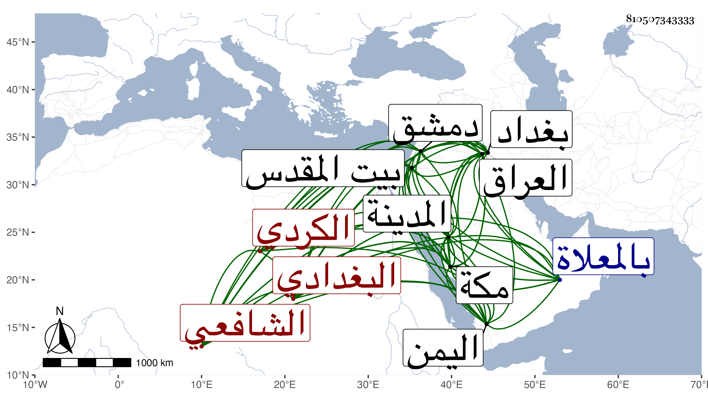

0902Sakhawi.DawLamic.ITO20230111-ara1.EIS1600.810507343333
Biography ID: 810507343333
316
عبد الملك بن سعيد بن الحسن نظام الدين الدربندي الكردي البغدادي الشافعي من أصحاب النور عبد الرحمن البغدادي . ولد في شعبان سنة تسع وأربعين وسبعمائة ذكره العفيف الجرهي في مشيخته وأنه أجاز له في سنة ثلاث وعشرين وثمانمائة والتقي بن فهد في معجمه وهو الذي نسبه دربنديا وقال نزيل رباط السدرة سمع ببغداد على أصحاب الحجار وبالمدينة النبوية على العراقي وبالقدس على أبي الخير ابن العلائي وحدث عنه بالعدة عن الكرب والشدة لأبيه وصحب النور عبد الرحمن الاسفرايني البغدادي وتخرج به وتسلك ولازم الخلوة كثيرا ودخل دمشق وتردد لمكة مرارا وجاور فيها غير مرة وتوجه منها إلى اليمن في أول سنة ست عشرة وعاد منها إلى مكة في منتصف التي تليها وأقام بها حتى مات غير أنه توجه لزيارة المدينة في بعض السنين وعاد فيها وباشر في مكة وقف رباط السدرة بعفة وصيانة ووقف كتبه بها وحدث سمع منه الطلبة وكان عالما صالحا خاشعا ناسكا عارفا بالله معتنيا بالعبادة والخير له إلمام بالفقه وطريق الصوفية ويذاكر بأشياء حسنة من أخبار المغل ولاة العراق المتأخرين . مات في جمادى الأولى سنة أربع وعشرين بمكة بعد قراءة الفاتحة ثلاثا متصلة بخروج روحه حين قول مؤذن العصر الله أكبر ودفن بالمعلاة رحمه الله وإيانا .
